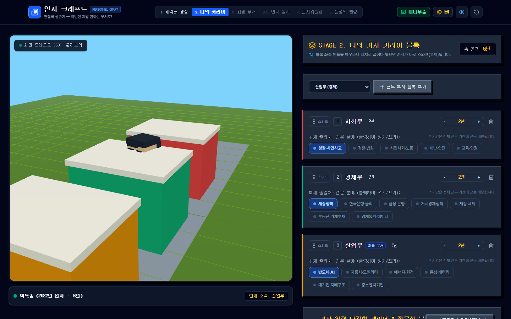
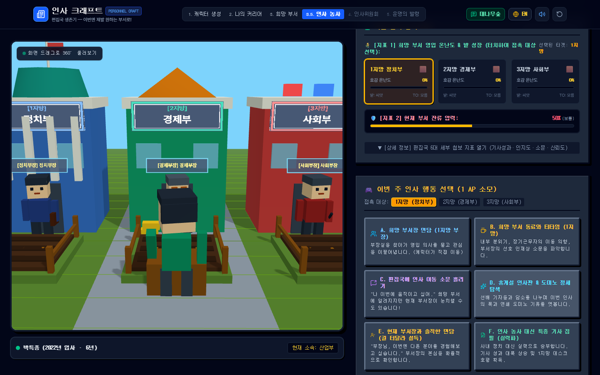
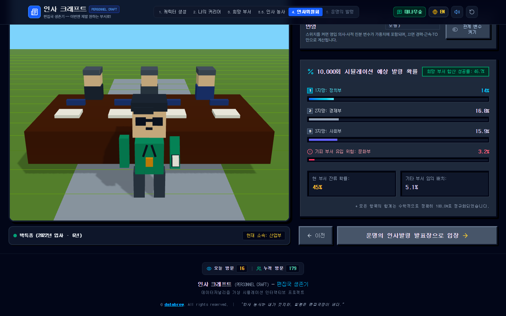
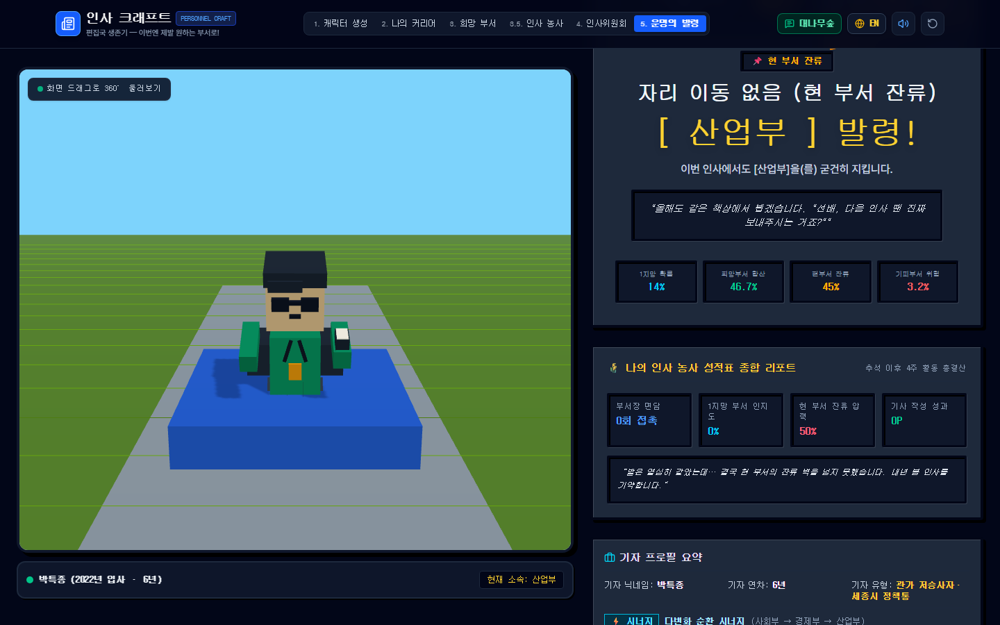

What this game is
Newspaper reporters change desks every few years: from politics to economy, from society to industry. Where you end up is not decided by your will alone. Open slots on a desk (TO), how many senior colleagues have stayed a long time, your relationship with the head of the desk you want, the rivals who applied alongside you, and whether your current desk head will let you go are all tangled together.
Personnel Craft turns this complicated personnel scene into a game. You stack your career as blocks, choose the desks you want, and then spend four weeks after Chuseok meeting desk heads and spreading rumors to cultivate the personnel season. In the end you take the assignment probabilities calculated from 10,000 simulations and walk into the announcement room of fate.
All characters, lines and probabilities are fictional values produced by the game. It does not predict the personnel moves of any real person or specific organization. "I cultivate the personnel season, but the editor-in-chief issues the assignments."
How it plays out
Start as one of the Eager Rookie, Overtime Veteran or Scoop Investigator types, or choose a nickname, desk, year of joining (0–24 years in) and first-half/second-half reshuffle timing yourself. Customize your 3D block look with hairstyle and color, shirt and press-badge color, and glasses, and rotate the view.
Stack the desks you have been through as blocks. Drag to reorder, and set years of service and beats (Bank of Korea and interest rates, semiconductors and AI, and so on); your reporter skills are drawn on a 9-axis radar from politics and policy to content and editing, and a reporter type and overall grade are assigned.
Choose your 1st to 3rd choices and one desk you never want to go to. For each desk, enter its TO, the number of long-tenured staff, your relationship and closeness with its head, signs of willingness to recruit you, the number of competing reporters, and your current desk head's willingness to release you. Leave anything unknown as unknown and it is reflected as uncertainty.
Four weeks from after the Chuseok holiday to the personnel committee. Spend action points (AP) on meeting the head of a preferred desk, tea time with colleagues, spreading transfer rumors, scouting the mood in the break room, and a frank talk with your current desk head, or ignore personnel matters and write a scoop. Your assignment probability changes in real time with every action.
Surprise events come up, and you can switch relationship variables such as closeness with desk heads and willingness to recruit on and off. A 10,000-run Monte Carlo simulation shows the success rate for 1st, 2nd and 3rd choices, the risk of being pushed to the avoided desk, and the chances of staying at the current desk or other placements, totaling 100%.
Check the result on an assignment notice in extra-edition style. You get a report card for your personnel-season work and career synergy, can leave your thoughts on an anonymous "bamboo grove" board, draw again under the same conditions, save the result card as an image, and take on the 10-year reporter life mode.
Screen preview

2. My career — stack desks as blocks

3.5 Cultivating the personnel season — whom to meet and what move to make

4. Personnel committee — 10,000 simulations

5. Assignment of fate — extra edition and report card
How assignment probabilities are calculated
Scores and weights are fictional rules set for the game and are not the personnel criteria of any real news organization. The desk head's lines are fictional lines generated automatically by an algorithm.
Technology and how it was built
Development status
Anyone can play right away. The result card can be saved as an image and shared.